<div class="container">
  <div id="contents" class="col-md-12 main-content"><h1 xmlns="http://www.w3.org/1999/xhtml" id="toc-id-20">Mini-pat meganiese stelsels en beheer</h1>

    <div xmlns="http://www.w3.org/1999/xhtml" class="frame-15">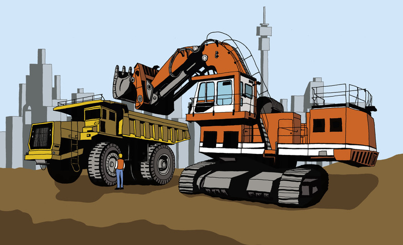</div>
    <figcaption xmlns="http://www.w3.org/1999/xhtml">Figuur 1</figcaption><span xmlns="http://www.w3.org/1999/xhtml" class="char-style-override-21">Week 1</span><li xmlns="http://www.w3.org/1999/xhtml">
    <p class="x--Body-investigation-hanging"> Wie kan Maria help
    om aan die gang te kom? Met ander woorde, met watter soort
    mense moet sy gaan gesels om haar met haar planne te help?</p>
    <hr/></li>
<li xmlns="http://www.w3.org/1999/xhtml">
    <p class="x--Body-investigation-hanging"> Watter bekwaamhede
    en vaardighede sal Maria nodig hê om huise te
    ontwerp en te bou?</p>
    <hr/></li>
<li xmlns="http://www.w3.org/1999/xhtml">
    <p class="x--Body-investigation-hanging"> Watter tipe
    toerusting sal haar maatskappy nodig hê om huise te
    bou?</p>
    <hr/></li>
<b xmlns="http://www.w3.org/1999/xhtml">Masjiene wat
    konstruksiemaatskappye gebruik</b><p xmlns="http://www.w3.org/1999/xhtml" class="x--Body-Text"><span>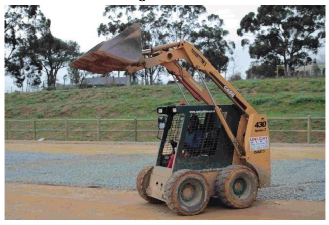</span> </p>

    <figcaption xmlns="http://www.w3.org/1999/xhtml">Figuur 2</figcaption><li xmlns="http://www.w3.org/1999/xhtml">
    <p class="x--Body-investigation-hanging"> Skryf die
    ontwerpopdrag deur hierdie sin in die spasie hieronder oor te
    skryf en te voltooi:</p>

    <p class="x--Body-story para-style-override-98"><i>Ek gaan my
    groep help om 'n . . . . . . . . te ontwerp en 'n . . . . . . . . te maak, wat sal .........</i>(1)</p>
    <hr/><p class="x--Body-investigation-hanging para-style-override-99">Kyk na
    die foto van 'n wipbakvragmotor op bladsy
    159. Die klap agter gaan self oop wanneer die bak lig. Daar is
    geen slotte en grendels om dit oop en toe te maak nie.</p>
</li>
<li xmlns="http://www.w3.org/1999/xhtml">
    <p class="x--Body-investigation-hanging"> kryf die
    spesifikasies neer.(2)</p>
    <hr/></li>
<li xmlns="http://www.w3.org/1999/xhtml">
    <p class="x--Body-investigation-hanging"> Skryf die
    beperkings neer. Onthou dat die beperkings die gereedskap,
    materiale en tyd is wat jy tot jou beskikking het om die model
    te maak.(2)</p>
    <hr/></li>
<li xmlns="http://www.w3.org/1999/xhtml">
    <p class="x--Body-investigation-hanging para-style-override-10"> Stel
    spanne van vier saam en vergelyk julle spesifikasies. Totaal
    [5]</p>
</li>
<p xmlns="http://www.w3.org/1999/xhtml" class="x--caption para-style-override-28"><span class="char-style-override-22"><span>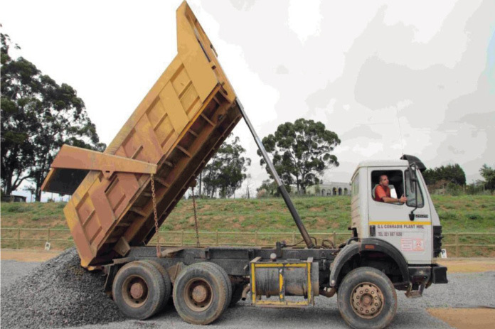</span></span></p>
<figcaption xmlns="http://www.w3.org/1999/xhtml">Figuur 3</figcaption><b xmlns="http://www.w3.org/1999/xhtml">skarniere</b> wat
    hulle toelaat om oop te maak en toe te maak.<div xmlns="http://www.w3.org/1999/xhtml" class="frame-15">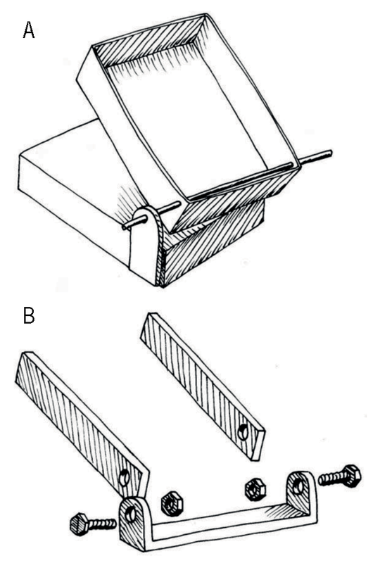</div>

       <figcaption xmlns="http://www.w3.org/1999/xhtml">Figuur 4</figcaption><b xmlns="http://www.w3.org/1999/xhtml">kantel</b>. Die tekening hier regs
    wys hoe jy iets met die gebruik van 'n hidrouliese stelsel
    opwaarts kan laat kantel.<div xmlns="http://www.w3.org/1999/xhtml" class="frame-15">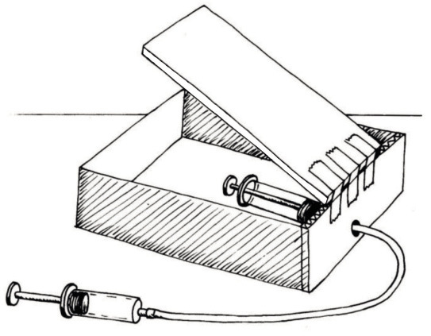</div>

       <figcaption xmlns="http://www.w3.org/1999/xhtml">Figuur 5</figcaption><b xmlns="http://www.w3.org/1999/xhtml">insetkrag</b> toegepas word, noem
    ons die <b xmlns="http://www.w3.org/1999/xhtml">insetsuier</b>,
    en die spuit waar die uitsetkrag verkry sal word, noem ons die
    <b xmlns="http://www.w3.org/1999/xhtml">uitsetsuier</b>.<p xmlns="http://www.w3.org/1999/xhtml" class="x--Body-box-heading"><b>Wees versigtig</b></p>

      <p xmlns="http://www.w3.org/1999/xhtml" class="x--Body-box-no-indent">Die karton moenie nat word
      nie, want dit sal pap en swak word.</p>
    <div xmlns="http://www.w3.org/1999/xhtml" class="frame-15">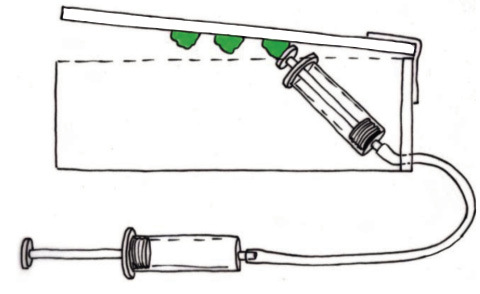</div>
        <figcaption xmlns="http://www.w3.org/1999/xhtml">Figuur 6</figcaption><b xmlns="http://www.w3.org/1999/xhtml">Kry jy 'n
    meganiese voordeel?</b><b xmlns="http://www.w3.org/1999/xhtml">uitsetkrag</b> moet groter as die
    <b xmlns="http://www.w3.org/1999/xhtml">insetkrag</b> wees.<li xmlns="http://www.w3.org/1999/xhtml">
    <p class="x--Body-investigation-hanging"> Moet die suier
    onder die laaibak dikker, dieselfde of dunner as die insetsuier
    wees? Gee 'n rede vir jou antwoord.</p>
    <hr/><p class="x--Body-investigation-hanging--1-3-">Verstel nou jou
    stelsel sodat die insetsuier die uitsetsuier laat beweeg. Maak
    seker dat die uitsetsuier nie heeltemal uit sy silinder beweeg
    nie.</p>

    <div class="aside">
      <p class="x--Body-box-no-indent">Maak seker dat die karton
      aan die agterkant van die boks nie nat word nie.</p>
    </div>
</li>
<li xmlns="http://www.w3.org/1999/xhtml">
    <p class="x--Body-investigation-hanging"> Die rugkant van die
    boks moet sterk enstewig wees. Waarom?</p>
    <hr/></li>
<li xmlns="http://www.w3.org/1999/xhtml">
    <p class="x--Body-investigation-hanging--1-3- para-style-override-102">
     Voltooi die tekening hier regs. Die groen lyne wys jou waar
    die uitsetsuier is as die karton onder is. Teken nou weer die
    suier met 'n potlood op dieselfde tekening. Wys sy posisie as
    hy die karton opgestoot het.</p>

<figure><div class="frame-15">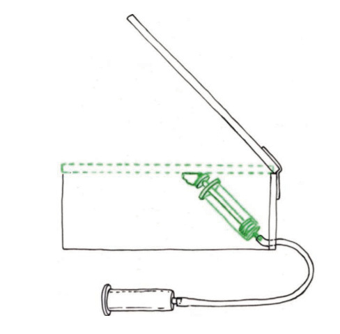</div>

        <figcaption>Figuur 7</figcaption></figure></li>
<span xmlns="http://www.w3.org/1999/xhtml">Kies 'n boks om die laaibak voor
    te stel. Die sand moet uitval as die laaibak teen
    30° opwaarts kantel, maar as die vragmotor op die
    pad ry, moet die klap die sand binne hou. Die klap het nie
    handvatsels of slotte om dit toe te hou nie, maar moet vanself
    toe bly.</span><li xmlns="http://www.w3.org/1999/xhtml">
    <p class="x--Body-investigation-hanging"> <span>Kyk na die
    posisie van die skarnier waaraan die klap swaai. Waarom is die
    skarnier juis op daardie posisie geplaas? Hoekom het die klap
    arms wat vorentoe strek tot by die die skarnier?</span></p>
    <hr/><p class="x--Body-Text para-style-override-90">[3]</p>
</li>
<li xmlns="http://www.w3.org/1999/xhtml">
    <p class="x--Body-investigation-hanging"> Kyk na die kettings
    wat van die arms van die klap na die vragmotor se onderstel
    gaan. Wat is die doel van hierdie kettings?</p>
    <hr/><p class="x--Body-Text para-style-override-90">[3]</p>
</li>
<li xmlns="http://www.w3.org/1999/xhtml">
    <p class="x--Body-investigation-hanging para-style-override-10"> Maak
    'n tekening van hoe die laaibak en die klap sal lyk as die
    laaibak plat is. Met ander woorde, hoe lyk die laaibak as die
    vragmotor op die pad ry, met die laaibak nie opgelig nie?</p>

   <figure><p class="x--Body-Text para-style-override-93">
    </p>
</figure><p class="x--Body-investigation-hanging">Kyk na die prent van
    'n wipbakvragmotor hieronder. Gee spesiale aandag aan die klap
    aan die agterkant van die laaibak.</p>

<figure><div class="frame-15"></div>

        <figcaption>Figuur 8</figcaption></figure></li>
<li xmlns="http://www.w3.org/1999/xhtml">
    <p class="x--Body-investigation-hanging"> Sal die klap van
    hierdie laaibak die sand binne hou as die vragmotor besig is om
    te ry? Verduidelik jou antwoord. Jy kan ook 'n tekening gebruik
    om jou antwoord te verduidelik.</p>
    <hr/><p class="x--Body-Text para-style-override-90">(3)</p>
	<p class="x--Body-Text para-style-override-90">Totaal [9]</p>
</li>
<li xmlns="http://www.w3.org/1999/xhtml">
    

    <p class="x--Body-investigation-hanging para-style-override-99"> Maak
    'n klap vir die laaibak van jou model van 'n wipbakvragmotor.
    Maak dan hieronder 'n rowwe skets van jou ontwerp van die klap.
    Totaal [5]</p>

  <figure><p class="x--Body-Text para-style-override-93">
    </p>
</figure></li>
<div xmlns="http://www.w3.org/1999/xhtml" class="frame-15">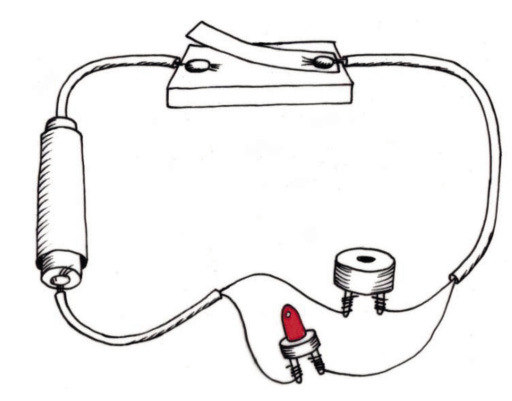</div>

        <p xmlns="http://www.w3.org/1999/xhtml" class="x--caption">Figuur 9</p>


    <p xmlns="http://www.w3.org/1999/xhtml" class="x--Body-indent">Verander die ontwerp van die
    skakelaar sodat dit "normaalweg geslote" is. Die gewig van die
    vrag behoort die skakelaar oop of "af" te hou, sodat dit nie
    die stroombaan kan voltooi nie. As die bak opwaarts gaan, moet
    die skakelaar die stroombaan voltooi. Dan sal die LED lig skyn
    en die bieper sal biep.</p>

    <ol xmlns="http://www.w3.org/1999/xhtml"><li>
    <p class="x--Body-investigation-hanging para-style-override-22"> Teken
    jou idee van 'n "normaalweg geslote" skakelaar hieronder. Wys
    die laaibak in die onder-posisie, besig om die skakelaar oop te
    hou. Jy hoef nie die hele vragmotor te teken nie, net die deel
    wat die skakelaar na onder druk.</p>

    <figure><p class="x--Body-Text para-style-override-93">
    </p>
</figure></li>
</ol><h3 xmlns="http://www.w3.org/1999/xhtml" class="x--Head-investigation">Hoe om wiele en 'n vragmotorbakwerk te maak</h3>

    <p xmlns="http://www.w3.org/1999/xhtml" class="x--Body-Text">Die sketse hieronder wys hoe om wiele
    met plastiek bottelproppe te maak, en hoe om die wiele aan die
    boks wat die vragmotor se bakwerk voorstel vas te heg.</p>

    <figure xmlns="http://www.w3.org/1999/xhtml"><p class="x--Body-Text para-style-override-105">
    <span>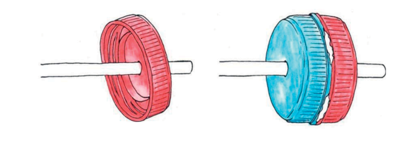</span><span class="char-style-override-3"/></p>
<figcaption>Figuur 10 </figcaption></figure><figure xmlns="http://www.w3.org/1999/xhtml"><p class="x--Body-Text para-style-override-105">
    <span>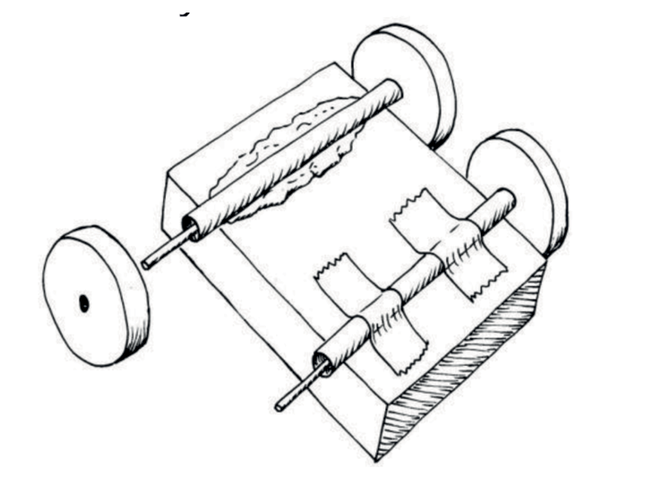</span><span class="char-style-override-3"/></p>
<figcaption>Figuur 11 </figcaption></figure><p xmlns="http://www.w3.org/1999/xhtml" class="x--Body-Text">Daar moet genoeg in die vragmotor se
    bakwerk wees vir die hidrouliese spuit om te beweeg. Die
    bakwerk moet ook plek vir die skarnier hê.</p>
<ol xmlns="http://www.w3.org/1999/xhtml"><li>
    <p class="x--Body-investigation-hanging"> Kyk na die wiele
    van die vragmotor in figuur 3. Vragmotors wat swaar vragte dra,
    moet wiele hê wat sterk is, maar ook breed. Hoekom
    moet die buitebande breed wees?</p>
    <hr/><p class="x--Body-Text para-style-override-90">(2)</p>
</li>
<li>
    <p class="x--Body-investigation-hanging"> Hoe kan jy verseker
    dat die wiele vry kan draai?</p>
    <hr/><p class="x--Body-Text para-style-override-90">(3)</p>
	    <p class="x--Body-Text para-style-override-90">Totaal [5]</p>
</li>
<li>


    <p class="x--Body-investigation-hanging para-style-override-10">Die vragmotor moet genoeg plek hê vir die
    hidrouliese spuit om te weeg. Dit moet ook plek hê
    vir die skarniere. Maak 'n skets van die boks wat jy vir die
    vragmotor se bakwerk gaan gebruik en wys die spuit en die
    skarniere op hierdie skets.</p>

   <figure><p class="x--Body-Text para-style-override-93">
    </p>
</figure></li>
</ol><h2 xmlns="http://www.w3.org/1999/xhtml" class="T-Heading-chapter" id="toc-id-24">Week 2</h2>

    <h2 xmlns="http://www.w3.org/1999/xhtml" id="toc-id-25">Ontwerp julle wipbakvragmotor (30 minute)</h2>

    <p xmlns="http://www.w3.org/1999/xhtml" class="x--Body-Text">Julle gaan in groepe van drie of vier
    werk om die verskillende onderdele van 'n model van 'n
    wipbakvragmotor te maak. Die onderdele moet presies inmekaar
    pas, sodat julle uiteindelik 'n werkende model van 'n
    wipbakvragmotor aanmekaar kan sit.</p>


    <p xmlns="http://www.w3.org/1999/xhtml" class="x--Body-indent para-style-override-10">Elke lid van
    die groep gaan slegs een onderdeel van die model maak.</p>

    <h3 xmlns="http://www.w3.org/1999/xhtml" class="x--Head-investigation">Ontwerp al die onderdele van die wipbakvragmotor</h3>

    <p xmlns="http://www.w3.org/1999/xhtml" class="x--Body-Text">Teken jou ontwerp op die volgende
    bladsye. Voorsien elke tekening van 'n opskrif om te wys
    waaroor die tekening gaan. Gebruik ook byskrifte om te wys wat
    die verskillende onderdele van die tekening is.</p>

    <p xmlns="http://www.w3.org/1999/xhtml" class="x--Body-indent">Gebruik jou liniaal en wys die
    afmetings van onderdele op jou tekening. Die afmetings is
    belangrik, want die onderdeel of onderdele wat jy maak, moet
    pas in onderdele wat ander lede van jou groep besig is om te
    maak.</p>

    <p xmlns="http://www.w3.org/1999/xhtml" class="x--Body-indent">As jy die waarskuwingstroombaan gaan
    maak, moet jy eers 'n stroombaandiagram teken, en ook 'n skets
    maak van hoe die stroombaan in die werklikheid sal lyk. Jy moet
    jou stroombaan so beplan dat die skakelaar onder die laaibak
    sal wees, en jy iewers 'n plek het om die battery weg te
    steek.</p>

    <p xmlns="http://www.w3.org/1999/xhtml" class="x--Body-indent">As jy 'n beter idee kry, moenie die
    aanvanklike sketse weggooi nie. Hou al jou ou sketse en
    aantekeninge bymekaar. Jou onderwyser sal jou assesseer op
    grond van hoeveel jou idees verbeter het. Gebruik los
    papiervelle as jy meer spasie nodig het om tekeninge van beter
    idees te maak.</p>

    <p xmlns="http://www.w3.org/1999/xhtml" class="x--Body-indent para-style-override-90">Totaal [6]</p>

    <figure xmlns="http://www.w3.org/1999/xhtml"><p class="x--Body-Text para-style-override-93">
    </p>
</figure>

<figure xmlns="http://www.w3.org/1999/xhtml"><p class="x--Body-Text para-style-override-93">
    </p>
</figure>

<figure xmlns="http://www.w3.org/1999/xhtml"><p class="x--Body-Text para-style-override-93">
    </p>
</figure>

<figure xmlns="http://www.w3.org/1999/xhtml"><p class="x--Body-Text para-style-override-93">
    </p>
</figure>

<h2 xmlns="http://www.w3.org/1999/xhtml" id="toc-id-26">Spanvergadering oor die ontwerp (30 minute)</h2>

    <p xmlns="http://www.w3.org/1999/xhtml" class="x--Body-Text">Julle werk in groepe van drie of vier
    leerders elk. Elke leerder gaan slegs spesifieke onderdele van
    die wipbakvragmotor maak en uiteindelik moet al die onderdele
    inmekaar pas.</p>

    <p xmlns="http://www.w3.org/1999/xhtml" class="x--Body-indent">Verdeel die werk onder julle. Gee
    byvoorbeeld vir elke leerder een van die volgende onderdele om
    te maak:</p>

    <ul xmlns="http://www.w3.org/1999/xhtml"><li class="x--Body-text-bullet"><span class="char-style-override-19"/>die
      laaibak en die vragmotor se bakwerk, die skarniere tussen
      hulle, en die hidrouliese stelsel;</li>

      <li class="x--Body-text-bullet"><span class="char-style-override-19"/>die
      laaibak se klap en die kajuit van die vragmotor; of</li>

      <li class="x--Body-text-bullet"><span class="char-style-override-19"/>die
      skak<span>elaar vir die waarskuwingsbieper en -liggie,
      en di</span><span>e vragmotor se wiele en asse.</span></li>
    </ul><p xmlns="http://www.w3.org/1999/xhtml" class="x--Body--above">As 'n span moet julle die vorms en
    afmetings van die onderskeie onderdele kontroleer om seker te
    maak dat alles inmekaar sal pas. Slegs dan kan julle begin om
    die onderskeie onderdele afsonderlik te maak. As hulle nie
    bymekaar pas nie, moet die ontwerpe aangepas word om hulle te
    laat pas.</p>

    <h3 xmlns="http://www.w3.org/1999/xhtml" class="x--Head-investigation">Individuele werk: maak gereed om julle onderdele te maak</h3>

    <p xmlns="http://www.w3.org/1999/xhtml" class="x--Body-Text para-style-override-91"><b>Elkeen moet self
    die volgende sinne voltooi:</b></p>

    <ol xmlns="http://www.w3.org/1999/xhtml"><li>
    <p class="x--Body-investigation-hanging"> <span class="char-style-override-16"><i>Ek maak  . . . .</i></span></p>
    <hr/></li>
<li>
    <p class="x--Body-investigation-hanging"> <span class="char-style-override-16"><i>Ek benodig die volgende
    materiale:</i></span></p>

    <div class="aside">
      <p class="x--Body-box-no-indent">Daar is <b>beperkings</b> op die materiale
      wat julle kan gebruik. Julle kan net materiale gebruik wat
      julle in die hande kan kry.</p>
    </div>
    <hr/><p class="x--Body-Text para-style-override-90">(3)</p>
</li>
<li>
    <p class="x--Body-investigation-hanging"><i><span class="char-style-override-16">Ek benodig die volgende
    gereedskap:</span></i></p>

    <div class="aside">
      <p class="x--Body-box-no-indent">Daar is <b>beperkings</b> op die gereedskap
      wat julle kan gebruik. Julle kan slegs gereedskap gebruik wat
      julle in die hande kan kry en wat veilig is om mee te
      werk</p>
    </div>
    <hr/><p class="x--Body-Text para-style-override-90">(3)</p>
</li>
</ol><p xmlns="http://www.w3.org/1999/xhtml" class="x--Body-Text para-style-override-90">Totaal [6]</p>

    <h2 xmlns="http://www.w3.org/1999/xhtml" id="toc-id-27">Maak jou onderdeel of onderdele (2 × 30 min = 60)</h2>

    <p xmlns="http://www.w3.org/1999/xhtml" class="x--Body-Text">Begin werk aan jou onderdeel, maar
    kontroleer met ander in die groep dat al die onderdele inmekaar
    sal pas. Maak nuwe sketse indien nodig. Totaal [12]</p>

    <figure xmlns="http://www.w3.org/1999/xhtml"><p class="x--Body-Text para-style-override-93">
    </p>
</figure><h3 xmlns="http://www.w3.org/1999/xhtml" class="T-Heading-chapter">Week 3</h3>

    <h2 xmlns="http://www.w3.org/1999/xhtml" id="toc-id-28">Sit die model van die wipbakvragmotor inmekaar (2 × 30 min = 60 minute)</h2>

    <p xmlns="http://www.w3.org/1999/xhtml" class="x--Body-text-1-3 para-style-override-106">Voeg nou al
    die onderdele saam om die hele vragmotor te vorm. Wees
    versigtig wanneer julle die onderdele inmekaarsit. Party
    onderdele sal dalk nie presies bymekaar pas nie. Moenie hulle
    saam dwing nie, want dit kan beide onderdele breek. Dit sal
    makliker wees om net een van die onderdele te verander deur dit
    versigtig te sny, of 'n klein stukkie met gom aan te plak.</p>


    <p xmlns="http://www.w3.org/1999/xhtml" class="x--Body-indent-1-3 para-style-override-106">Die prent
    hier regs is 'n voorbeeld van 'n wipbakvragmotor wat iemand
    gemaak het. Julle model kan anders lyk as hierdie een en kan
    ook beter werk as hierdie model. Totaal [12]</p>

<figure xmlns="http://www.w3.org/1999/xhtml"><div class="frame-15">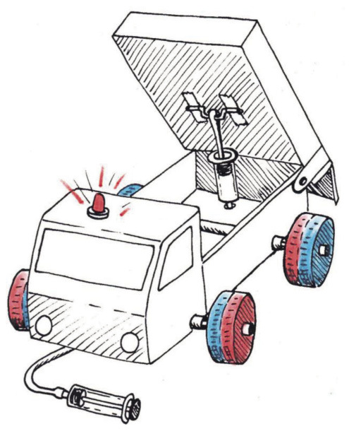</div>

        <figcaption>Figuur 12</figcaption></figure><h2 xmlns="http://www.w3.org/1999/xhtml" id="toc-id-29">Die aanbieding van julle projek (2 × 30 min = 60 minute)</h2>

    <p xmlns="http://www.w3.org/1999/xhtml" class="x--Body-Text">Julle span sal vyf minute hê
    om julle ontwerp te verduidelik en julle tekeninge vir die res
    van die klas te wys.</p>

    <p xmlns="http://www.w3.org/1999/xhtml" class="x--Body-indent">Elke spanlid moet die beste sketse
    wat hy of sy van onderdele gemaak het aan die klas wys.</p>

    <p xmlns="http://www.w3.org/1999/xhtml" class="x--Body-indent">Drie nuwe tekeninge moet van die
    voltooide vragmotor gemaak word. Julle moet as span besluit wie
    elk van die volgende tekeninge gaan maak:</p>

    <ul xmlns="http://www.w3.org/1999/xhtml"><li class="x--Body-text-bullet"><span class="char-style-override-19"/> 'n
      Artistiese, driedimensionele tekening wat die voltooide
      wipbakvragmotor, met die laaibak na bo gekantel, van
      <i>voor</i> af wys.</li>

      <li class="x--Body-text-bullet"><span class="char-style-override-19"/>  'n
      Artistiese, driedimensionele tekening wat die voltooide
      wipbakvragmotor, met die laaibak na bo gekantel, van
      <i>agter</i> af wys..</li>

      <li class="x--Body-text-bullet"><span class="char-style-override-19"/> 'n
      Ortografiese tekening wat die vooraansig en syaansigte van
      die voltooide wipbakvragmotor wys. Dit word 'n "ortografiese
      eerstehoekprojeksie" genoem.</li>
    </ul><p xmlns="http://www.w3.org/1999/xhtml" class="x--Body-Text">Die illustrasie hieronder wys hoe die
    model op die papier geprojekteer word om 'n ortografiese
    eerstehoekprojeksie te teken.</p>

    <figure xmlns="http://www.w3.org/1999/xhtml"><p class="x--Body-Text"><span>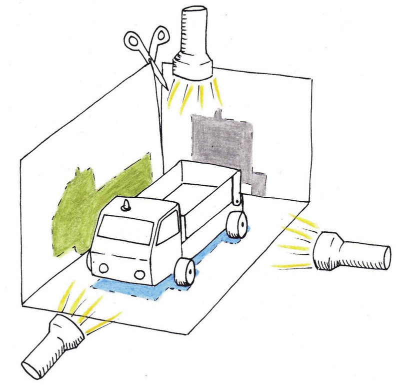</span><span class="char-style-override-3"/></p>
<figcaption>Figuur 13</figcaption></figure><p xmlns="http://www.w3.org/1999/xhtml" class="x--Body--above">Kyk na die skêr in die
    figuur. As jy die boks oopsny sal die sye na onder val en plat
    op die tafel gaan lê. Dan het jy 'n ortografiese
    eerstehoekprojeksie.</p>

    <p xmlns="http://www.w3.org/1999/xhtml" class="x--Body-indent">Op die volgende bladsy is daar 'n
    oefening om die ortografiese eerstehoekprojeksie van die
    vragmotor te voltooi.</p>

    <p xmlns="http://www.w3.org/1999/xhtml" class="x--Body-Text">Die syaansig is vir jou geteken.
    Gebruik die rooi projeksielyne en voltooi die bo-aansig van die
    vragmotor. Gebruik dan die blou lyne en voltooi die vooraansig.
    Laastens voeg jy die byskrifte by vir die "vooraansig",
    "bo-aansig" en "sy-aansig" op jou tekening.</p>

    <p xmlns="http://www.w3.org/1999/xhtml" class="x--Body-Text para-style-override-90">Totaal [10]</p>

    <figure xmlns="http://www.w3.org/1999/xhtml">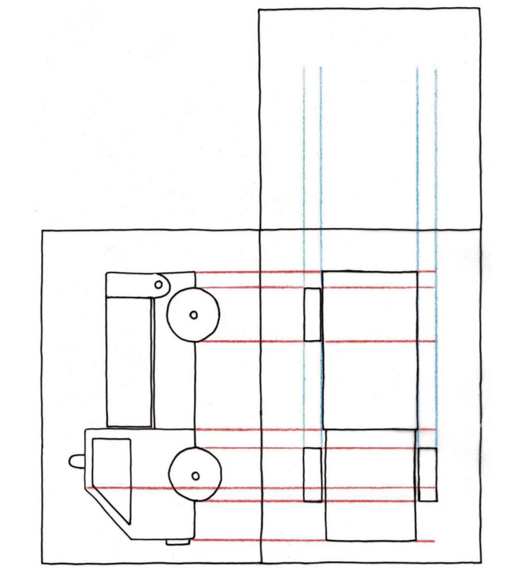
<figcaption>Figuur 14</figcaption></figure><h3 xmlns="http://www.w3.org/1999/xhtml" class="x--Head-investigation">Evalueer jou model</h3>

    <p xmlns="http://www.w3.org/1999/xhtml" class="x--Body-Text">As jy 'n model evalueer, vra jy vrae
    daaroor. Die meeste van die vrae het betrekking op die
    spesifikasies. Blaai terug en lees weer die spesifikasies.</p>

    <ul xmlns="http://www.w3.org/1999/xhtml"><li class="x--Body-text-bullet"><span class="char-style-override-19"/> Het die
      vragmotor vier wiele wat breed genoeg lyk om 'n swaar vrag te
      dra?</li>

      <li class="x--Body-text-bullet"><span class="char-style-override-19"/> Het die
      vragmotor 'n kajuit vir die bestuurder?</li>


      <li class="x--Body-text-bullet"><span class="char-style-override-19"/>Kan die
      vragmotor 'n eetlepel sand karwei?</li>

      <li class="x--Body-text-bullet"><span class="char-style-override-19"/> Kan die
      laaibak met 'n hidrouliese stelsel opgelig word?</li>

      <li class="x--Body-text-bullet"><span class="char-style-override-19"/> Does the
      load slide out of a gate at the back of the load bed?</li>

      <li class="x--Body-text-bullet"><span class="char-style-override-19"/> Wat is
      die grootste hoek wat dit kan bereik?</li>

      <li class="x--Body-text-bullet"><span class="char-style-override-19"/> Kan die
      vrag by die klap aan die agterkant van die laaibak
      uitgly?</li>

   <li class="x--Body-text-bullet"><span class="char-style-override-19"/> Hoor jy
      'n bieper, of begin 'n LED-liggie skyn, as die laaibak
      gekantel word?</li>

 <li class="x--Body-text-bullet"><span class="char-style-override-19"/>  Gee die
      hidrouliese stelsels vir jou 'n meganiese voordeel?</li>


      <li class="x--Body-text-bullet"><span class="char-style-override-19"/> Teoreties
      gesproke, wat is die meganiese voordeel van die hidrouliese
      stelsel? Daar is 'n hoë mate van wrywing binne die
      spuite, daarom is die werklike meganiese voordeel minder as
      die teoretiese meganiese voordeel.</li>
    </ul><h3 xmlns="http://www.w3.org/1999/xhtml" class="x--Head-investigation">Volgende kwartaal</h3>

    <p xmlns="http://www.w3.org/1999/xhtml" class="x--Body-Text">Geniet jou wintervakansie. Na die
    vakansie gaan julle meer leer oor elektriese stroombane en die
    onderdele wat binne elektriese stroombane gebruik kan word.</p>
  
  </div>
</div>